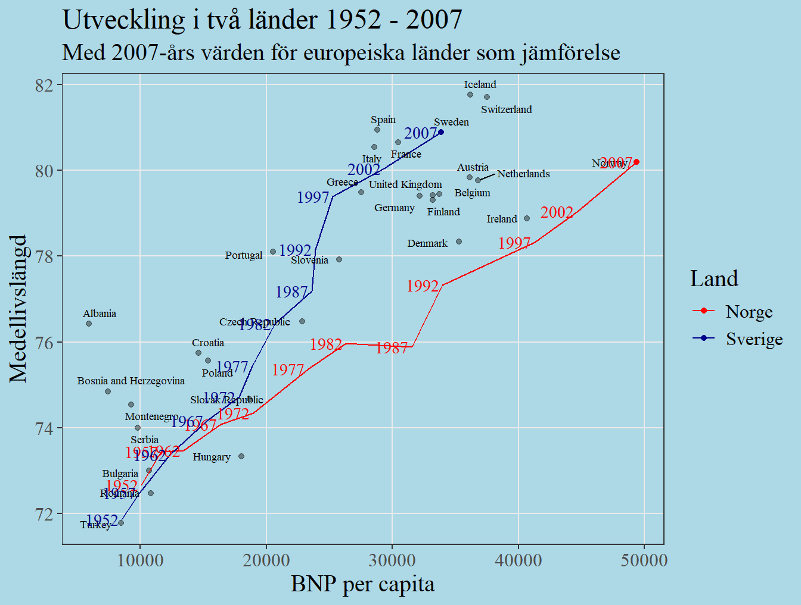

1 Datahantering och grafer
Datorövning 1 handlar om grunderna till R. Efter övningen ska vi kunna
- Starta RStudio och orientera oss i gränssnittet,
- Installera och ladda tilläggspaket (Packages),
- Definera objekt och tillämpa funktioner i R,
- Transformera en tabell med data genom att välja kolumner och filtrera rader,
- Skapa grafer med
ggplot2.
1.1 Uppstart och orientering
För att arbeta i R måste vi installera språket R och ett gränssnitt för att arbeta i R, vanligen RStudio. Både R och RStudio kan laddas ner gratis, från https://www.r-project.org/ respektive https://posit.co/.
Starta RStudio, till exempel genom att gå till Startmenyn och söka på RStudio eller genom att dubbelklicka på en fil som öppnas i RStudio. Gränssnittet i RStudio är uppdelat i fyra delar och varje del består av en eller flera flikar. De viktigaste är i nuläget
- Console där kod körs och resultat skrivs ut,
- Environment där man ser skapade objekt,
- History där man ser tidigare körd kod,
- Plots där man ser skapade grafer, och
- Help där man ser hjälpsidor för funktioner.
Uppgift 1.1 (Help-fliken) Hitta fliken Help, klicka på husikonen under fliken. Finns det en länk med RStudio Cheat Sheets? Följ den länken för att hitta guider till R som kan bli nyttiga längre fram. För nu, gå tillbaka till RStudio.
Ofta skriver man inte sin kod direkt i konsollen, utan i ett separat skript - en vanlig textfil som innehåller den kod man vill köra. I RStudio kan man öppna ett nytt skript genom att gå till File > New File > R Script eller genom att klicka Ctrl + Shift + N.
Uppgift 1.2 (Ett första skript) Öppna ett nytt skript genom File-menyn eller genom Ctrl + Shift + N. Skriv
i skriptet och tryck Ctrl + Enter. Titta i flikarna Console och Environment. Har något hänt? Du bör se att koden i skriptet körts i konsollen och att ett nytt objekt a ligger i Environment.
1.2 Packages från CRAN
En av de stora styrkorna med R är att språket kan byggas ut av dess användare. De här tilläggen kan sedan samlas i paket (packages) och delas med andra. Rs officiella bibliotek för paket kallas för CRAN (Comprehensive R Archive Network).
För att använda ett specifikt paket måste det först installeras. Om man vet namnet på paketet man vill installera kan man köra
I det här fallet installeras paketet tidyverse, vilket innehåller funktioner för hantering av data.
I RStudio kan man också installera paket från Packages-fliken.
Uppgift 1.3 (Installera tidyverse-paketet) Kör raden ovan för att installera tidyverse. Du kan antingen köra raden genom att skriva den i Console eller genom att skriva i ett skript och köra därifrån genom Ctrl + Enter.
Uppgift 1.4 (Installera gapminder-paketet) Paketet gapminder innehåller lite intressant data vi kommer använda senare. Installera paketet gapminder genom att fylla i den saknade biten och köra raden nedan.
Paket måste också laddas för varje ny session. Innan man kan använda innehållet i ett paket måste man därför köra
Uppgift 1.5 (Ladda gapminder-paketet) Ladda paketet gapminder genom att fylla i och köra raden nedan.
1.3 Objekt och funktioner
Ett objekt i R är en namngiven informationsmängd. Objekt kan se ut på många olika sätt - under kursens gång används objekt som består av insamlad data (konstruerade som vektorer eller tabeller), objekt som är statistiska modeller, och flera andra former. I R skapar man objekt med assign-pilen <- (mindre än och bindestreck).
I ett tidigare exempel fanns raden
Här skapas ett objekt med namnet a som innehåller informationen 5. Assign-pilen pekar alltså på det namn man vill ge objektet och pekar från objektets innehåll.
Ett lite mer komplicerat exempel på ett objekt ges av
Här skapas ett objekt b som innehåller en serie numeriska värden (en vektor). Värdena i en vektor är ordnade och man kan plocka ut ett specifikt värde med hakparenteser.
## [1] 4## [1] 4 5Uppgift 1.7 (Skapa en vektor) Skapa ett objekt med namnet new_vector som innehåller värden 5, 7 och 10 genom att fylla i följande rad.
Uppgift 1.8 (Ta ut andra värdet) Använd hakparenteser för att plocka ut det andra värdet ur vektorn new_vector.
Objekt kan manipuleras genom att tillämpa funktioner. En funktion tar någon ingående data och ger något utgående resultat. Funktioner anges genom att skriva funktionens namn följt av ingående data inom parenteser, och resultatet kan antingen skrivas ut i konsollen eller sparas som ett nytt objekt. En grundinstallation av R innehåller en mängd färdiga funktioner, t.ex.
## [1] 23vilket ger summan av värdena i vektorn b,
som ger en simpel graf, och
## [1] 1.732051 1.000000 2.000000 1.000000 2.236068 3.000000som beräknar kvadratroten för varje element i vektorn.
Uppgift 1.9 (Summera vektorn) Fyll i och kör följande rad för att beräkna summan av vektorn new_vector
Vid konstruktionen av vektorn användes också en grundläggande funktion - funktionen c(), som tar en serie värden och skapar en sammanhängande vektor av värden.
Alla R-funktioner har en tillhörande hjälpfil som kan plockas fram genom att skriva frågetecken följt av funktionsnamnet, t.ex. ?sum. Från hjälpfilen får man att sum() tar numeriska vektorer som ingående värde och beräknar summan. Man kan styra funktionens beteende genom att sätta ett argument na.rm (vilket här styr hur funktionen hanterar saknade värden). Som illustration kan man titta på
b <- c(3, 1, 4, 1, 5, 9, NA) # Lägger till ett saknat värde
sum(b) # na.rm = FALSE är grundinställning## [1] NA## [1] 23Det första försöket sum(b) ger utfallet NA, men om man sätter na.rm = TRUE beräknas summan efter att det saknade värdet plockats bort. Notera också att skript kan kommenteras med #.
1.4 Sekvenser av funktioner
Ofta vill man genomföra flera operationer på ett objekt. Man behöver då genomföra en sekvens av funktioner. Säg till exempel att man har värdena \[(-4, -2, -1, 1, 2, 4)\] och vill ta absolutvärde (vilket gör negativa tal till motsvarande positiva tal) och sedan summera. Den typen av sekvenser kan genomföras på ett par olika sätt. Ett första sätt är att spara resultatet i varje steg och sedan använda utfallet i nästa steg:
c <- c(-4, -2, -1, 1, 2, 4) # Skapa en vektor av värden
c_absolute <- abs(c) # Ta absolutvärden. Skapa c_absolut
sum(c_absolute) # Summera värden i c_absolut## [1] 14Här skapas ett objekt c som innehåller en vektor där några tal är negativa. I nästa rad används abs för att skapa absolutvärden. Slutligen summeras absolutvärdena med sum.
Notera att det är möjligt att skapa ett objekt med namnet c trots att det redan är namnet på en funktion - R förstår ur sammanhanget om objektet eller funktionen ska användas. Det kan dock bli lite oklart för en läsare, så försök som regel att undvika att skapa objekt med vanliga funktionsnamn som sum och mean.
Uppgift 1.10 (Kvadrat, summa och roten ur) Fyll i och kör följande rader för att ta varje värde i new_vector i kvadrat, sedan summera, och sedan ta roten ur.
Ett alternativ till att spara utfallet i varje steg är att skriva en senare funktion runt en tidigare funktion. Det fungerar för att R utvärderar funktioner inifrån-ut. Med samma exempel som tidigare får man
medan beräkningen i övningen blir
Den här typen av skrivning kan spara plats men blir snabbt svårläst.
Ett sista alternativ är att använda en så kallad pipe (namnet kommer från att en sekvens funktioner kallas en pipeline). En pipe skrivs %>% och kan i RStudio tas fram med kortkommandon Ctrl + Shift + M. Pipen tar utfallet av en funktion till vänster och sänder till en funktion till höger. Den kan utläsas i dagligt tal som och sen. Med samma exempel som tidigare kan vi skriva
library(tidyverse)
c(-4, -2, -1, 1, 2, 4) %>% # Skapa en datamängd och sen
abs() %>% # ta absolutvärden, och sen
sum() # beräkna summan.## [1] 14Uppgift 1.11 (Kvadrat, summa och rot med pipe) Fyll i de saknade funktionerna och kör följande rader för att ta varje värde i new_vector i kvadrat, sedan summera, och sedan ta roten ur, denna gång genom att länka funktionerna med en pipe %>%.
1.5 Datainskrivning
Det första praktiska steget i en statistisk analys är att importera data. I R kan det göras genom att direkt skriva in sin data och spara som ett nytt objekt, men ett bättre och vanligare sätt är att importera sin data från en extern fil eller databas.
I ett tidigare exempel användes funktionen c() för att skapa en vektor av data. Ofta ordnas flera vektorer i en tabell där varje kolumn är en vektor och varje rad en observation av någon enhet. En datatabell (en data.frame i R) skapas genom funktionen data.frame() följt av namngivna vektorer. Exempeldata kan skrivas in genom föjande.
dat <- data.frame(Vecka = c(7,7,7,7,7,7,
11,11,11,11,11,11),
Behandling = c("A","A","A","B","B","B",
"A","A","A","B","B","B"),
Vikt = c(232,161,148,368,218,257,
1633,2213,972,2560,2430,855),
N = c(2.63,2.90,2.99,3.54,3.30,2.85,
1.53,1.90,NA,2.58,NA,NA))
datRadbrytningar och blanksteg är oviktiga i R, och används bara för läsbarhet här. Saknade värden skrivs in som NA för not available. Notera att alla kolumner inte behöver vara av samma datatyp men att värden inom en kolumn måste vara det. Här är Behandling text medan övriga kolumner är numeriska.
Uppgift 1.12 (Alea iacta est) Kasta din tärning tio gånger och skriv in resultatet i en datatabell i R med hjälp av grundkoden nedan. Om du saknar en tärning, fråga lämplig person om du kan få en. Behåll tärningen, den behövs till nästa datorövning (och närhelst man står inför ett avgörande livsbeslut).
Objektet dat är av typen data.frame - en tabell med rader och kolumner. Man kan ange en specifik kolumn i en data.frame med dollartecken följt av kolumnens namn.
## [1] 232 161 148 368 218 257 1633 2213 972 2560 2430 855Man kan också plocka ut rader och kolumner med hakparenteser och ordningstal.
dat[2,3] # Andra raden och tredje kolumnen
dat[2, ] # Tomt värde ger alla värden.
dat[ ,3] # Alla värden i kolumn 3Uppgift 1.13 (Plocka ut en specifik kolumn) I den tidigare övningen skapade du ett objekt dat_dice. Använd dollartecken för att plocka ut kolumnen Utfall från det objektet.
Genom att plocka ut en kolumn från en data.frame kan man beräkna vanlig beskrivande statistik med funktioner som mean() (medelvärde) och sd() (standardavvikelsen).
## [1] 1003.917## [1] 951.3067Funktionen plot() ger en enkel graf.
1.6 Urval ur en tabell med select och filter
En vanlig operation på en tabell är att göra ett urval - antingen ett urval av rader (t.ex. ett visst land), vilket kallas filtrering eller ett urval av variabler (t.ex. land och befolkning), vilket kallas selektion. Här tittar vi på hur det kan göras med funktionerna filter() och select() från paketet tidyverse. Vi använder gapminder-datan som kan laddas med library(gapminder).
För att filtrera på ett givet land kan man använda pipe-funktionen från datan till en filter-funktion, t.ex.
Inom filterfunktionen anges ett logisk villkor country == "Sweden" och utfallet är de rader där villkoret är sant. Notera de dubbla likhetstecknen - de måste användas för ett logisk villkor eftersom enkelt likhetstecken används för att skapa objekt och sätta funktionsargument.
Uppgift 1.15 (Filtrera för land) Vad måste ändras i koden för att istället plocka ut rader där landet är Finland? Hur många rader har det urvalet i datan?
Om man vill välja flera länder kan man använda funktionen %in% på ett liknande sätt.
och om man vill ha mer än ett villkor kan man rada dem i filter-funktionen:
gapminder %>% # Ta datan, och sen
filter(country %in% c("Sweden", "Finland"), # filtrera för land
year == 2002) # och för årFör att se fler eller färre rader kan man använda en pipe %>% till funktionen print(). Följande skriver ut fem rader
Om man istället vill göra ett urval av kolumner kan man använda select(). Som argument anges de kolumner man vill välja, t.ex.
Uppgift 1.16 (Befolkade länder) Funktionen arrange() sorterar data efter en angiven kolumn. Följande stycke ger oss Europas länder efter befolkning.
gapminder %>%
filter(continent == "Europe", year == 1962) %>%
select(country, lifeExp, pop) %>%
arrange(-pop) Gör lämpliga ändringar för att få Asiens länder från 2002 ordnade efter förväntad medellivslängd.
1.7 Grafer med ggplot2
Vi kan nu börja titta på grafer. R har en mängd grundläggande funktioner för grafer. Vi såg tidigare ett exempel på funktionen plot().
Ett object gm_2002skapas efter att ha filtrerat för året 2002. Tecknet $ används för att välja kolumnerna lifeExp och gdpPercap ur objektet gm_2002.
För mer avancerade grafer används dock ofta funktioner ur Rs paketbibliotek. Här illustreras det mest populära - ggplot2. I ggplot2 byggs grafer upp med tre grundläggande byggstenar:
- data, informationen man vill visualisera,
- aestethics, en koppling mellan data och visuella element såsom grafens axlar, objekts storlek och färg,
- geometries, de geometriska former som visas i grafen.
En graf skrivs med en startfunktion ggplot som anger namnet på datan och grafens aestethics, och därefter sätts geometriska element genom funktioner som börjar med geom_. Ett spridningsdiagram kan t.ex. skapas med geom_point.
Grafen kan byggas ut genom att sätta aestethics för färg och storlek. Man kan också dela en graf i småfönster med facet_wrap och styra grafens utseende genom att sätta ett tema såsom theme_bw.
ggplot(gm_2002, aes(x = lifeExp, y = gdpPercap,
color = continent, size = pop)) +
geom_point() +
facet_wrap(~ continent)Uppgift 1.17 (Livslängd över tid) Vad ska ändras i stycket nedan för att skapa en graf med år på x-axeln, medellivslängd på y-axeln och skilda småfönster för olika kontinenter?
Andra graftyper kan skapas med andra geom_-funktioner. Stapeldiagram ges av geom_col (col för column). Man kan också använda geom_bar om man bara vill räkna antal rader per någon kategori.
Följande väljer ut en kontinent och år och plottar ländernas befolkning stapeldiagram.
dat_small <- gapminder %>%
filter(continent == "Europe", year == "2002")
ggplot(dat_small, aes(pop, country, fill = gdpPercap)) +
geom_col(color = "black")Argumentet fill styr färgen för ytor (här staplarnas ytor) medan color i geom_col() styr kanten runt varje stapel.
Man kan styra grafiken i en ggplot genom funktionen theme(). Det är ett ganska komplicerat ämne, men låt oss titta på några grunder. Vi börjar med att skapa en enkel graf: en boxplot över medellivslängd per kontinent.
dat_small <- gapminder %>%
filter(year == 2002)
ggplot(dat_small, aes(x = lifeExp, y = continent)) +
geom_boxplot()Vi kan ändra utseendet på grafen genom argument inom geometrier och med funktionen theme(). I theme() sätter man de specifika egenskaper man vill ändra genom att tillskriva dem ett element. Valet av element beror på typen av grafiskt objekt - text sätts t.ex. med element_text() och ytor med element_rect() (för rectangle). Vi ger ett exempel med ändrad bakgrund, rutmönster, och teckenstorlek.
ggplot(dat_small, aes(lifeExp, continent)) +
geom_boxplot(fill = "lightblue") +
theme(panel.background = element_rect(fill = "red3"),
text = element_text(size = 15,
color = "white", family = "serif"),
axis.text = element_text(color = "white"),
plot.background = element_rect(fill = "grey30",
color = "black"),
panel.grid.major.y = element_blank())Uppgift 1.18 (Temaval 1) Ändra färgvalen i grafen ovan för att skapa snyggast möjliga graf. Funktionen colors() ger de färger som finns tillängliga i R. Man kan också använda hex-koden för färger, t.ex. fill = "#ffdd00".
Uppgift 1.19 (Temaval 2) Ändra färgvalen i grafen ovan för att skapa fulast möjliga graf. Visa de två graferna för någon annan och se om de kan säga vilken som är vilken.
1.8 AI-uppgift I
Nedan har vi en graf gjord med ggplot2 med flera olika geom och ändringar från standardtemat.

Uppgift 1.20 (Dekonstruera grafen) Vilka geografiska former (punkter, linjer ytor) visas i grafen och hur är de kopplade till datans variabler? Vilka ändringar har gjorts från standardtemat (bakgrundsfärg, typsnitt, teckenstorlek)?
Uppgift 1.21 (Rekonstrera grafen) Använd en chatbot (såsom Microsofts co-pilot eller OpenAIs ChatGPT) för att rekonstrera grafen. Börja med att beskriva grafen i ord och be om R-kod. Klipp ut koden och kör i R. Läs koden du fått. Finns det några delar som är svåra att förstå. Med vissa chatverktyg kan man också klippa in bilden och be om den bakomliggande koden.
Uppgift 1.22 (Steg i Excel) Hur skulle man gå tillväga för att skapa samma graf i Excel? Be en chatbot om en stegvis instruktion.